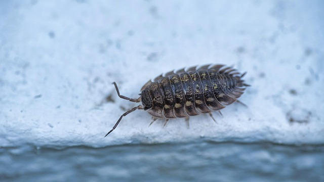

LADYBUG

open for a fun fact!
Ladybugs are not just bugs, they are classified as beetles!
ISOPOD
open for a fun fact!
Isopods (roly-polies) are not insects, but are actually crustaceans! The land isopod has a giant sea dwelling cousin the size of a human head!
BUTTERFLY

open for a fun fact!
Butterflies group together in what is called "mud-puddling" or just "puddling"! This happens when multiple butterflies gather around fluid nutrients.